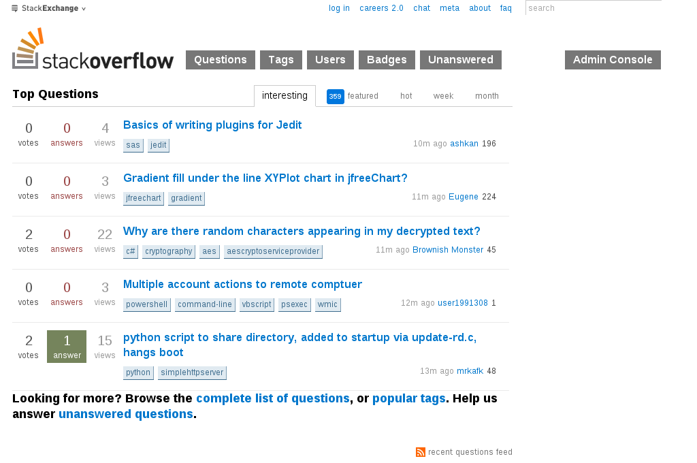
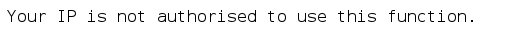

RE 1 Description: - challenge-1 - challenge.do
So, after downloading challenge.do and opening it up, we were presented with this:
''=~('('.'?'.'{'.('`'|'%').('['^'-').('`'|'!').('`'|',').'"'.('['^'.').('['^'(').('`'|'%').('{'^'[')
.('['^'(').('['^'/').('['^')').('`'|')').('`'|'#').('['^'/').';'.('['^'.').('['^'(').('`'|'%').('{'^
'[').('['^',').('`'|'!').('['^')').('`'|'.').('`'|')').('`'|'.').('`'|"'").('['^'(').';'.('`'|')').(
'`'|'&').'('.'\\'.'$'.'#'.('`'^'!').('{'^')').('`'^"'").('{'^'-').'='.'='.('^'^('`'|','))."\)".'\\'.
'{'.('`'|')').('`'|'&').'('.'\\'.'$'.('`'^'!').('{'^')').('`'^"'").('{'^'-').'['.('^'^('`'|'.')).']'
.'.'.'\\'.'$'.('`'^'!').('{'^')').('`'^"'").('{'^'-').'['.('^'^('`'|'/')).']'.('`'|'%').('['^('*')).
'\\'.'$'.('`'^'%').('`'^'.').('{'^'-').'\\'.'{'."'".('{'^'.').('{'^'(').('`'^'%').('{'^')')."'".'\\'
.'}'.')'.'\\'.'{'.('['^'+').('['^')').('`'|')').('`'|'.').('['^'/').'\\'.'"'.('`'^'&').('`'|(',')).(
'`'|'!').('`'|"'").'='."'".('`'^"'").('`'|'/').('`'|',').('`'|'$').('`'|'%').('`'|'.').('`'^('$')).(
'`'|'!').('['^'"').('['^'(').('`'^'!').('['^')').('`'|'%').('`'^'"').('`'|'!').('`'|'#').('`'|"\+").
"'".'\\'.'"'.'\\'.'}'.'\\'.'}'.'"'.'}'.')');$:='.'^'~';$~='@'|'(';$^=')'^'[';$/='`'|'.';$,='('^"\}";
Upon inspection, MavJS pointed out that it was Perl code. Further hints shed light that it was obfuscated Perl code that we were looking at. So, a little bit of Google searching and I stumbled upon this site. Following the instructions on the site, I fired up the Terminal and ran the script and deobfuscated Perl code appeared:
naavinm@naavinm:~/Desktop$ perl -MO=Deparse script.pl | perltidy > newscript.pl
script.pl syntax OK
naavinm@naavinm:~/Desktop$ cat newscript.pl
'' =~
/(?{eval"use strict;use warnings;if(\$#ARGV==2)\{if(\$ARGV[0].\$ARGV[1]eq\$ENV\{'USER'\})\{print\"Flag='GoldenDaysAreBack'\"\}\}"})/;
$: = 'P';
$~ = 'h';
$^ = 'r';
$/ = 'n';
$, = 'U';
And the flag is: GoldenDaysAreBack.
Web Security questions, ranging from 1 to 5 are the first category in HackIM. But it isn't neccessary to solve them first before others. So the challenge is presented as:
It's clear that the Admin Console was meant for us. So we clicked on it! But BAM! This showed up,
That's bad isn't? Well, do some googling, as usual about stackoverflow hacking cases, and you'd have come across this; Anatomy of an Attack: How I Hacked StackOverflow. From the blog post, you'd see that the author mentions not to rely upon X-Forwarded-For for anything. Well, there's a hint isn't it. ;)
So, how do we go about hacking that challenge then? It's pretty simple, and most Linux distros already have it by default....
...drum roll please...
Mr. curl :D
So here is what we did you exploit it:
~$ curl --header "X-Forwarded-For: 127.0.0.1" http://ctf.nullcon.net/challenges/web/web1/getflag.php
After that it will print out:
~$ The Flag is DholuBholuareTWINS
Sweet!? :D
So, who/what is APU CSFC?
APU CSFC - Asia Pacific University of Technology & Innovation's Cyber Security & Forensics Club.
How is GliderSwirley associated/affiliated with APU CSFC?
GliderSwirley was formed out of that same university and the same core members who run APU CSFC as well. We were unsatisfied with how there was a lack of Information Security and Forensics awareness, so we thought, the first step towards learning about InfoSec is to participate in CTFs and do InfoSec stuff.
Thus, GliderSwirley has been participating in CTFs with only 3-4 persons for a little over 3 months and a few months before APU CSFC was officialised/founded in APU. We do welcome other rookie players to collaborate with us as well. :)
The start of this year for GliderSwirley was pretty much awesome, to be honest, managed to grow to a 6 person team and participated in nullcon HackIM CTF, scored 5200 points and placed 23rd overall. Not bad for the 0xn00bs, eh? :P
[Note} There will be a series of writeups for the challenges we've managed to solve at HackIM CTF following this post.